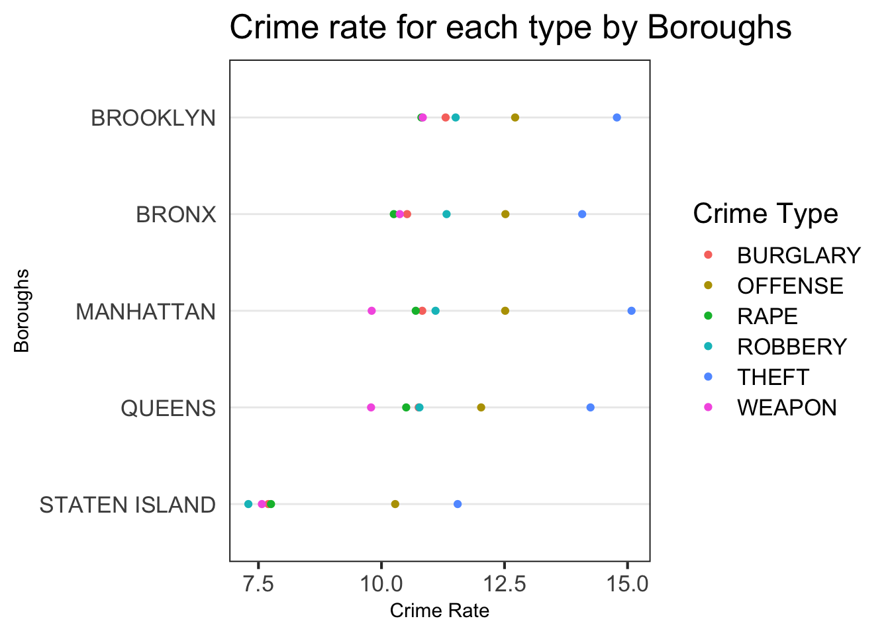

Chapter 5 Results
library(dplyr)
library(choroplethrMaps)
library(choroplethr)
library(ggplot2)
library(viridis)
library(chron)
library(tidyverse)In chapter 3, we have dropped some trivial crime types like “CRIMINAL MISCHIEF” and now we only pay attention to the common crime types of events happened in NYC. There are 11 crime types in total and we can see the frequency rank of them in the following graph.
df1 <- data.frame(df_select[,4])
df1['count'] <- 1
df1<- df1 %>%
group_by(df_select...4.) %>%
summarize(Freq = sum(count))
ggplot(df1, aes(reorder(df_select...4.,df1$Freq), y = df1$Freq)) +
geom_bar(position = "dodge",stat = "identity",fill="lightblue") +
coord_flip() +
labs(x = "Crime Types", y = "Total amount", title = "Major Crimes in NYC")As we can see, THIEF is the most common crime in NYC and we deduce that this phenomenon may result from the low cost of theft. Offence also appears very common, because there are many different types of crime could be classified as OFFENCE. ARSON, MURDER and KIDNAPPING are the least common crime types in the dataset.
For the convenience of the later researches, we drop 5 types of crime from our dataset: ARSON, MURDER, KIDNAPPING, DRUG and FRAUD.
MURDER related data has great amount of missing data for latitude and longitude, also ARSON, MURDER and KIDNAPPING contain very few useful pieces of data, which is difficult to conduct instructive analysis. We drop FRAUD because this could be avoided effectively. For DRUG, although it is very common, usually it is the indirect reason for other crimes like offence or murder, the crime DRUG itself usually doesn’t cause great harm to the society.
dangerous <-c('BURGLARY','OFFENSE','RAPE','ROBBERY','THEFT','WEAPON')
df_select <- df_select %>% mutate(OFNS_DESC = ifelse(OFNS_DESC %in% dangerous, OFNS_DESC, NA)) %>% drop_na(OFNS_DESC)
df_select <- drop_na(df_select, BORO_NM)DATA2 <- read.csv("QuickFacts.csv")
DATA2 <-DATA2[, colSums(is.na(DATA2)) != nrow(DATA2)]
DATA2 <-DATA2[,-c(2,8)]
DATA2 <-as.data.frame(t(DATA2))
names(DATA2) <- as.character(unlist(DATA2[1,]))
DATA2 <- DATA2[-1,]
DATA2 <-as.data.frame(DATA2[,1])
names(DATA2)<-'Population'
row.names(DATA2) <-c('MANHATTAN','BRONX','QUEENS','BROOKLYN','STATEN ISLAND')
ChorDF <-df_select%>%
group_by(df_select$BORO_NM) %>%
summarise(count=n())%>%
ungroup()
ChorDF <- data.frame(ChorDF[,-1], row.names = unlist(ChorDF[,1]))
ChorDF <- merge(ChorDF,DATA2,by = 0)
ChorDF$count <-as.numeric(ChorDF$count)
ChorDF$Population <-as.numeric((gsub("\\,", "", ChorDF$Population)))
ChorDF <-ChorDF %>%
mutate(rate = as.double(count/Population)*100000)
ChorDF[,'region'] <- NA
for(i in 1:nrow(ChorDF)){
if(ChorDF[i,1] == 'BRONX'){ChorDF[i,'region'] <-36005}
if(ChorDF[i,1] == 'BROOKLYN'){ChorDF[i,'region'] <-36047}
if(ChorDF[i,1] == 'MANHATTAN'){ChorDF[i,'region'] <-36061}
if(ChorDF[i,1] == 'QUEENS'){ChorDF[i,'region'] <- 36081}
if(ChorDF[i,1] == 'STATEN ISLAND'){ChorDF[i,'region'] <-36085}
}
colnames(ChorDF)[4] <-'value'
data(county.regions)
nyc_county_names = c("kings", "bronx", "new york", "queens", "richmond")
nyc_county_fips = county.regions %>%
filter(state.name == "new york" & county.name %in% nyc_county_names) %>%
select(region)
county_choropleth(ChorDF,
title = "Number of Selected Crime per 100000 Population for Five Borough",
legend = "Crime Rate",
num_colors = 1,
county_zoom = nyc_county_fips$region)+scale_fill_viridis_c()## Scale for 'fill' is already present. Adding another scale for 'fill',
## which will replace the existing scale.
After selecting the six crime types that most related to us, we take the population of each borough into account and calculate the crime rate of selected crime in five boroughs. The Boroughs with top three highest crime rate are Mahanttan, Bronx and Brooklyn, whereas Queens and Staten Island have lower crime rate, and this forms a spatial pattern in the graph. We are surprised about the finding, because it breaks our “stereotype” that Brooklyn is the most dangerous borough in New York City.
However,we cannot judge which county is more dangerous for us and which county is safer from this graph. Since different person may have different ranks for the dangerousness of the crime types.
As full-time students, we go out more frequently from Monday to Friday rather than weekends. Therefore we want to find a borough with lowest frequency of crime events in weekdays, and the plot is as following:
#Cleveland dot plot
library(tidyverse)
cleveland <-df_select[,c('BORO_NM','OFNS_DESC')]
cleveland['Freq'] = 1
cleveland <- cleveland %>%
group_by(BORO_NM,OFNS_DESC) %>%
summarize(Freq = log(sum(Freq),2)) %>%
ungroup()
theme_dotplot <- theme_bw(14) +
theme(axis.text.y = element_text(size = rel(.55)),
axis.text.x = element_text(size = rel(.70)),
axis.ticks.y = element_blank(),
axis.title.x = element_text(size = rel(.70)),
axis.title.y = element_text(size = rel(.70)),
panel.grid.major.x = element_blank(),
panel.grid.major.y = element_line(size = 0.5),
panel.grid.minor.x = element_blank())
ggplot(cleveland,aes(Freq,fct_reorder2(BORO_NM,
OFNS_DESC == 'THIEF',Freq, .desc = FALSE),color = OFNS_DESC))+
geom_point()+
ylab('Boroughs')+
xlab('Crime Rate')+
labs(title = 'Crime rate for each type by Boroughs ',color = "Crime Type")+
theme_dotplot
The above graph shows the exact crime rate for each type in five boroughs. The most frequent crime types are OFFENSE and THEFT for all boroughs. As we discussed above, the cost of theft is the lowest and definiton of offense is broadly defined which could be the reason for high frequency of these two crime types.
Therefore, we focus on other four crime types. It is interesting that Brooklyn has highest crime rate for all four severe cirme types(Rape,Robbery,weapon,burglary) but the total crime rate of Brooklyn is actually lower than that of Manhattan. It seems like that the crimes happened in Brooklyn are more likely to be some severe crimes.
Bronx has the second highest total crime rate and also second highest rate for all severe crime types. Therefore neither Bronx nor Brooklyn is a good choice for student like us to live concerning safety.
For the Staten Island, the frepuency of all crime types are signifnatly lower than those of other four boroughs. From the safety concern, Staten Island may be a good choice for moving to. However, commute time should also be taken into account for final decision making.